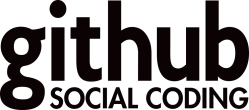
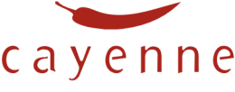
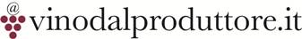

Rails Girls arriva a Milano! Girls in Tech Italy organizza il workshop gratuito che ti permetterà di immergerti nel mondo delle web app costruite con Ruby on Rails!
Iscriviti subito! Le iscrizioni sono aperte fino all'8 Novembre.
Imparerai come progettare e programmare una web app grazie all'aiuto dei nostri coaches. Ti sentirai ispirata dalle esperienze al femminile nel mondo IT di speakers internazionali.
Ti servirà soltanto il tuo laptop, curiosità e un pizzico di immaginazione! Non hai bisogno di avere alcuna conoscenza di programmazione!
Vuoi aiutarci? Stiamo cercando Sponsors. Contattaci.
| 18.00-20.00 |
Installation partyUn cocktail di benvenuto per conoscere tutte le partecipanti e i coaches. Porta il tuo pc , così potremo installare Ruby per te. |
|---|
| 9:00 - 10:00 |
Registrazione e colazioneFiniremo di installare Ruby sul tuo pc durante una buona colazione. |
|---|---|
| 10:00 - 10:30 |
WelcomePresentazione della giornata & welcome degli sponsors. |
| 10:30 - 11:00 |
Coaches Talk: Storie dal mondo femminile ITDonne e programmazione: Rachel Mayers da GitHub San Francisco Rachel is a developer at GitHub. She loves ruby, javascript, legos and gardening. |
| 11:00 - 11:45 |
Introduzione a Ruby on RailsCome è composta una pagina web e a cosa serve Ruby on Rails Let's get coding!Qualche esempio su come utilizzare Ruby on Rails |
| 11:45 - 13:00 |
Inizio WorkshopIniziamo la tua prima web application |
| 13:00 - 14:00 | Pranzo |
| 14.00- 14:30 |
Esercitazione Bentobox - Understanding Web AppsRicapitoliamo cosa abbiamo imparato e come funziona una web app. |
| 14:30 - 16:00 |
WorkshopContinuiamo a lavorare sull'applicazione. |
| 16:00 - 16:30 |
Coaches Talk: Storie dal mondo femminile ITDonne e programmazione: Laura Gaetano di Bitstem Software Vienna Trainee developer @ Bitstem Software, lavora anche per NTRY Ticketing. È un'artista appassionata di musica e gufi, ama la fotografia, fare dolci e viaggiare. |
| 16:30 - 18:00 |
WorkshopPerfeziona la tua prima web app. |
18:00 - 18:30 |
Coaches Talk: Storie dal mondo femminile ITDonne e programmazione: Mu-An Chiou da GitHub London Designer & frontend developer at GitHub. Startups, open source, and crowd-funding enthusiast. |
| 18:45-20:30 |
AfterpartyConcludiamo con una bella festa aperta a tutti. |
Le iscrizioni chiudono:l'8 Novembre
Location: WCAP Accelerator, Via Rombon 48, Milano
 Girls in Tech Italy GiT è un Social Network Enterprise globale focalizzato sull’empowerment, l’impegno e la formazione delle donne nel settore della tecnologia e nel mondo startup.
Girls in Tech Italy GiT è un Social Network Enterprise globale focalizzato sull’empowerment, l’impegno e la formazione delle donne nel settore della tecnologia e nel mondo startup.
 Mikamai è un'agenzia digitale con una grande passione per Ruby on Rails.
Mikamai è un'agenzia digitale con una grande passione per Ruby on Rails.
 GitHub is the best place to share code with friends, co-workers, classmates, and complete strangers. Over three million people use GitHub to build amazing things together.
 Cayenne è un’agenzia pubblicitaria media-neutral, che crede nell’importanza di tecnologia, ricerca e sviluppo in ogni suo progetto di comunicazione.

 Vinodalproduttore.it seleziona produttori italiani eccellenti e vende il loro meravigliosi vini a veri appassionati, consegnandoli direttamente dalle cantine dei produttori.
 SiamoSoci è il sito web dove le startup incontrano gli investitori privati e reperiscono i capitali per realizzare i loro piani di sviluppo.
SiamoSoci è il sito web dove le startup incontrano gli investitori privati e reperiscono i capitali per realizzare i loro piani di sviluppo.
 ShopAlike.it è la piattaforma italiana per lo shopping online creata da Visual Meta che raccoglie il meglio degli e-commerce italiani.
ShopAlike.it è la piattaforma italiana per lo shopping online creata da Visual Meta che raccoglie il meglio degli e-commerce italiani.
 Rails Girls Milano fa parte degli eventi della Global Entrepreneurship Week Italy
Rails Girls Milano fa parte degli eventi della Global Entrepreneurship Week Italy
Quanto costa il workshop? Niente, è completamente gratuito! Porta solo il tuo pc e tanto entusiasmo!
A chi è rivolto? Donne di ogni età con un po' di pratica del computer. Alcuni talk saranno in inglese.
Possono partecipare anche gli uomini? Si, ma solo se accompagnati da una donna interessata ad imparare. Diamo la priorità alle donne.
Vorrei essere uno sponsor dell'evento, come posso fare? Gli sponsor sono i benvenuti. Contattaci